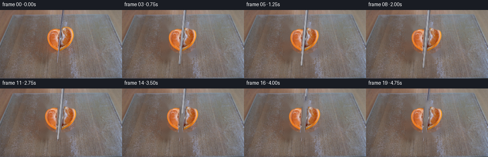
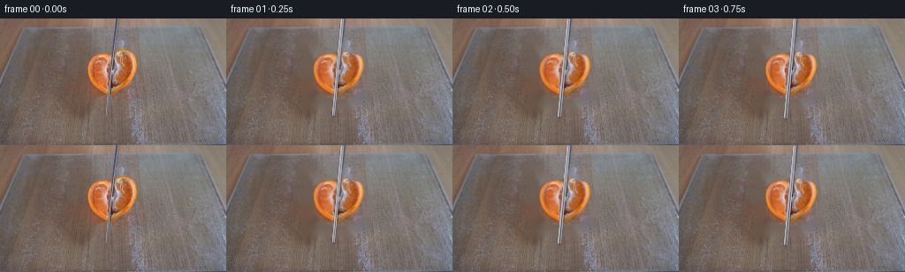
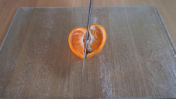
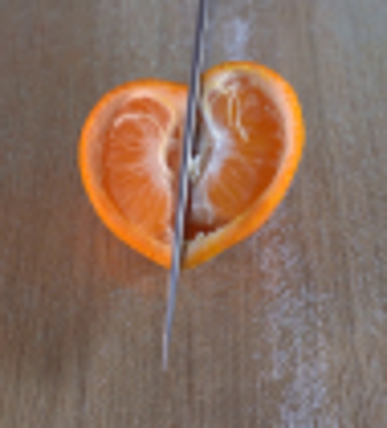

CODING AGENTS AS PIXEL WORLD MODELS
traex/GPT-5.6-Sol · 0041
点击播放 · 原生 RGB 像素
逐轮保存的候选
回放视频、检查图与代码变化。
每份候选均可单独播放。实际图片检查记录在下方工具轨迹中。
候选 01播放与检查图
点击播放 · 原生 RGB 像素


展开代码变化
--- 上一保存版本
+++ 本次保存版本
@@ -0,0 +1,124 @@
+from pathlib import Path
+import numpy as np
+import cv2
+from PIL import Image, ImageDraw, ImageFilter
+import artifact_io
+
+ROOT = Path(__file__).resolve().parent
+base = np.array(Image.open(ROOT/'first_frame.png').convert('RGB'))
+H,W = base.shape[:2]
+assert (W,H)==(256,144)
+
+# The orange is isolated only to create a clean local background plate. Every
+# rendered frame otherwise starts from the photographed first frame.
+bgr=cv2.cvtColor(base,cv2.COLOR_RGB2BGR)
+hsv=cv2.cvtColor(bgr,cv2.COLOR_BGR2HSV)
+yy,xx=np.indices((H,W))
+orange=((hsv[...,0]<30)&(hsv[...,1]>55)&(yy>25)&(yy<102)&(xx>86)&(xx<165)).astype(np.uint8)*255
+orange=cv2.morphologyEx(orange,cv2.MORPH_CLOSE,np.ones((9,9),np.uint8))
+orange=cv2.dilate(orange,np.ones((7,7),np.uint8),iterations=1)
+# include knife over the fruit while removing the setup from the plate
+orange[((yy>23)&(yy<104)&(xx>116)&(xx<133))]=255
+bg_bgr=cv2.inpaint(bgr,orange,5,cv2.INPAINT_TELEA)
+clean_bg=cv2.cvtColor(bg_bgr,cv2.COLOR_BGR2RGB)
+# retain photographic grain rather than a telltale smooth inpaint patch
+rng=np.random.default_rng(4101)
+noise=rng.normal(0,1.0,clean_bg.shape[:2])[...,None]
+clean_bg=np.clip(clean_bg.astype(float)+noise,0,255).astype(np.uint8)
+
+# Source tangerine pixels, with a softly feathered silhouette.
+fruitmask=np.zeros((H,W),np.uint8)
+cv2.ellipse(fruitmask,(127,64),(30,27),0,0,360,255,-1)
+# observed asymmetric bulges
+cv2.circle(fruitmask,(111,55),14,255,-1); cv2.circle(fruitmask,(143,54),14,255,-1)
+fruitmask=cv2.GaussianBlur(fruitmask,(3,3),.55)
+fruit_rgba=np.dstack([base,fruitmask])
+
+# split fruit through the current knife center line: x = 131 - .10*y
+Y,X=np.indices((H,W)); line=131.1-.10*Y
+left=fruit_rgba.copy(); right=fruit_rgba.copy()
+left[...,3]=np.where(X<=line,fruit_rgba[...,3],0).astype(np.uint8)
+right[...,3]=np.where(X>line,fruit_rgba[...,3],0).astype(np.uint8)
+
+def rgba_warp(src, M, interp=cv2.INTER_LINEAR):
+ return cv2.warpAffine(src,M,(W,H),flags=interp,borderMode=cv2.BORDER_CONSTANT,borderValue=(0,0,0,0))
+
+def over(dst, layer):
+ a=layer[...,3:4].astype(np.float32)/255
+ return np.clip(layer[...,:3]*a+dst*(1-a),0,255).astype(np.uint8)
+
+def poly_layer(drawfun, blur=0):
+ im=Image.new('RGBA',(W,H),(0,0,0,0)); d=ImageDraw.Draw(im); drawfun(d)
+ if blur: im=im.filter(ImageFilter.GaussianBlur(blur))
+ return np.array(im)
+
+def knife_layer(t, knife_y, cutting=True):
+ """Photorealistic narrow blade. Its original line is already in frame 0.
+ The blade moves down as it completes the slice, then withdraws upward."""
+ # top handle/upper blade axis, retaining the slight photographed lean
+ def xaxis(y): return 131.2 - .095*y
+ ytip=knife_y
+ ytop=-18
+ # width varies: spine/highlight and dark cutting edge
+ pts=[(xaxis(ytop)-2.2,ytop),(xaxis(ytop)+2.1,ytop),
+ (xaxis(ytip)+0.7,ytip),(xaxis(ytip)-0.7,ytip)]
+ L=np.zeros((H,W,4),np.uint8)
+ p=np.array([[int(round(x)),int(round(y))] for x,y in pts],np.int32)
+ cv2.fillConvexPoly(L,p,(88,91,104,255),lineType=cv2.LINE_AA)
+ # steel face in cool grey gradient, dark right edge, bright bevel
+ for off,col,alpha in [(-1.2,(205,209,215),220),(-.35,(137,145,160),250),(.45,(48,52,69),245),(1.15,(218,221,225),160)]:
+ p1=(int(round(xaxis(max(ytop,0))+off)),max(ytop,0)); p2=(int(round(xaxis(ytip)+off)),int(round(ytip)))
+ cv2.line(L,p1,p2,(*col,alpha),1,cv2.LINE_AA)
+ # specular thread running down the near face
+ cv2.line(L,(int(xaxis(0)-.7),0),(int(xaxis(ytip)-.7),int(ytip)),(224,226,230,165),1,cv2.LINE_AA)
+ return L
+
+frames=[base.copy()]
+for i in range(1,20):
+ # 0..10: downward cutting stroke. 11..19: blade withdrawal and subtle settling.
+ cut=min(1.0,i/10.0)
+ settle=max(0.0,(i-10)/9.0)
+ # The original fruit is re-composited from its photographic pixels. The two
+ # halves part by only a few pixels, as they would under a vertical knife.
+ sep=0.3+4.2*(cut**1.55)
+ droop=0.45*(cut**1.3)+.4*settle
+ # minute opposing rotations about the fruit center
+ Ml=cv2.getRotationMatrix2D((127,64),1.8*cut,1.0); Ml[:,2]+=(-sep,droop+.3*settle)
+ Mr=cv2.getRotationMatrix2D((127,64),-1.7*cut,1.0); Mr[:,2]+=(sep,droop+.2*settle)
+ lf=rgba_warp(left,Ml); rf=rgba_warp(right,Mr)
+ canvas=clean_bg.copy()
+ # soft contact shadows on the glass
+ def shadows(d):
+ d.ellipse((95-sep,82,126-sep,96),fill=(45,28,16,25))
+ d.ellipse((128+sep,82,160+sep,96),fill=(45,28,16,25))
+ canvas=over(canvas,poly_layer(shadows,3.1))
+ canvas=over(canvas,lf); canvas=over(canvas,rf)
+ # fresh dark moist cut groove and pith highlights revealed as halves part
+ alpha=int(180*cut)
+ def groove(d):
+ xL=126.0-sep; xR=128.0+sep
+ d.line([(xL,43),(xL-1,80)],fill=(87,42,22,alpha),width=1)
+ d.line([(xR,42),(xR+1,80)],fill=(82,40,20,alpha),width=1)
+ d.line([(xL-1,47),(xL-2,74)],fill=(246,217,181,int(alpha*.70)),width=1)
+ d.line([(xR+1,46),(xR+2,75)],fill=(244,216,178,int(alpha*.67)),width=1)
+ # wet juice glints at lower incision
+ if cut>.55:
+ a=int(125*(cut-.55)/.45)
+ d.ellipse((124-sep,78,126-sep,80),fill=(255,221,154,a))
+ d.ellipse((129+sep,77,131+sep,79),fill=(255,226,164,a))
+ canvas=over(canvas,poly_layer(groove,.22))
+ # During the cut, tip descends from 108 to 124 (through the tangerine and
+ # onto board); then the hand lifts it out of the locked camera frame.
+ if i<=10: tip=108+1.6*i
+ else: tip=124-18.0*(i-10)
+ if tip>0:
+ # blade's faint shadow on glass/fruit to its right
+ def bshadow(d):
+ d.line([(132,0),(121,int(min(H-1,tip+3)))],fill=(24,23,31,42),width=2)
+ canvas=over(canvas,poly_layer(bshadow,1.2))
+ canvas=over(canvas,knife_layer(i/19,tip))
+ frames.append(canvas)
+
+frames=np.asarray(frames,dtype=np.uint8)
+frames[0]=base # contract: exactly the supplied photograph
+artifact_io.save(frames,ROOT)
可观测工具轨迹
实际执行的命令与返回图片。
命令 1exit 0
/bin/bash -lc "cat prompt.txt && printf '\\n---GENERATION_RULES---\\n' && cat GENERATION_RULES.md"
命令 2exit 1
/bin/bash -lc "find . -maxdepth 2 -type f -printf '%p\\n' | sort && printf '\\n--- binaries ---\\n' && command -v ffmpeg && command -v python3"
命令 3exit 0
/bin/bash -lc 'cat artifact_io.py'
命令 4exit 0
/bin/bash -lc "python3 - <<'PY' mods=['numpy','PIL','cv2','imageio','scipy','skimage'] for m in mods: try: x=__import__(m); print(m, 'OK', getattr(x,'__version__','')) except Exception as e: print(m,'NO',e) PY command -v ffmpeg || true command -v convert || true"
命令 5exit 0
/bin/bash -lc "python3 - <<'PY'
from PIL import Image
im=Image.open('first_frame.png')
im.crop((80,20,175,125)).resize((760,840)).save('.tmp/crop.png')
PY"命令 6exit 0
/bin/bash -lc "python3 - <<'PY'
from PIL import Image
import numpy as np
im=np.array(Image.open('first_frame.png'))
for y in [0,20,40,60,80,100,108]:
x=130-.09*y
print('\\ny',y,'center',x)
for xx in range(int(x)-4,int(x)+6): print(xx,im[y,xx].tolist(),end='; ')
print()
PY"命令 7exit 0
/bin/bash -lc "python3 - <<'PY'
import cv2,numpy as np
from PIL import Image
im=cv2.imread('first_frame.png')
hsv=cv2.cvtColor(im,cv2.COLOR_BGR2HSV)
# BGR image, orange H around?
for yy,xx in [(50,105),(50,145),(70,105),(80,140),(60,130),(20,100)]:print(yy,xx,im[yy,xx],hsv[yy,xx])
mask=((hsv[:,:,0]<30)&(hsv[:,:,1]>60)&(np.indices(hsv.shape[:2])[0]>25)&(np.indices(hsv.shape[:2])[0]<100)&(np.indices(hsv.shape[:2])[1]>85)&(np.indices(hsv.shape[:2])[1]<170)).astype(np.uint8)*255
mask=cv2.morphologyEx(mask,cv2.MORPH_CLOSE,np.ones((11,11),np.uint8))
cs,_=cv2.findContours(mask,cv2.RETR_EXTERNAL,cv2.CHAIN_APPROX_SIMPLE)
out=np.zeros(mask.shape,np.uint8)
for c in cs:
if cv2.contourArea(c)>20:cv2.drawContours(out,[c],-1,255,-1)
cv2.imwrite('.tmp/mask.png',out)
print([(cv2.contourArea(c),cv2.boundingRect(c)) for c in cs])
PY"命令 8exit 0
/bin/bash -lc "cat > generate.py <<'PY'
from pathlib import Path
import numpy as np
import cv2
from PIL import Image, ImageDraw, ImageFilter
import artifact_io
ROOT = Path(__file__).resolve().parent
base = np.array(Image.open(ROOT/'first_frame.png').convert('RGB'))
H,W = base.shape[:2]
assert (W,H)==(256,144)
# The orange is isolated only to create a clean local background plate. Every
# rendered frame otherwise starts from the photographed first frame.
bgr=cv2.cvtColor(base,cv2.COLOR_RGB2BGR)
hsv=cv2.cvtColor(bgr,cv2.COLOR_BGR2HSV)
yy,xx=np.indices((H,W))
orange=((hsv[...,0]<30)&(hsv[...,1]>55)&(yy>25)&(yy<102)&(xx>86)&(xx<165)).astype(np.uint8)*255
orange=cv2.morphologyEx(orange,cv2.MORPH_CLOSE,np.ones((9,9),np.uint8))
orange=cv2.dilate(orange,np.ones((7,7),np.uint8),iterations=1)
# include knife over the fruit while removing the setup from the plate
orange[((yy>23)&(yy<104)&(xx>116)&(xx<133))]=255
bg_bgr=cv2.inpaint(bgr,orange,5,cv2.INPAINT_TELEA)
clean_bg=cv2.cvtColor(bg_bgr,cv2.COLOR_BGR2RGB)
# retain photographic grain rather than a telltale smooth inpaint patch
rng=np.random.default_rng(4101)
noise=rng.normal(0,1.0,clean_bg.shape[:2])[...,None]
clean_bg=np.clip(clean_bg.astype(float)+noise,0,255).astype(np.uint8)
# Source tangerine pixels, with a softly feathered silhouette.
fruitmask=np.zeros((H,W),np.uint8)
cv2.ellipse(fruitmask,(127,64),(30,27),0,0,360,255,-1)
# observed asymmetric bulges
cv2.circle(fruitmask,(111,55),14,255,-1); cv2.circle(fruitmask,(143,54),14,255,-1)
fruitmask=cv2.GaussianBlur(fruitmask,(3,3),.55)
fruit_rgba=np.dstack([base,fruitmask])
# split fruit through the current knife center line: x = 131 - .10*y
Y,X=np.indices((H,W)); line=131.1-.10*Y
left=fruit_rgba.copy(); right=fruit_rgba.copy()
left[...,3]=np.where(X<=line,fruit_rgba[...,3],0).astype(np.uint8)
right[...,3]=np.where(X>line,fruit_rgba[...,3],0).astype(np.uint8)
def rgba_warp(src, M, interp=cv2.INTER_LINEAR):
return cv2.warpAffine(src,M,(W,H),flags=interp,borderMode=cv2.BORDER_CONSTANT,borderValue=(0,0,0,0))
def over(dst, layer):
a=layer[...,3:4].astype(np.float32)/255
return np.clip(layer[...,:3]*a+dst*(1-a),0,255).astype(np.uint8)
def poly_layer(drawfun, blur=0):
im=Image.new('RGBA',(W,H),(0,0,0,0)); d=ImageDraw.Draw(im); drawfun(d)
if blur: im=im.filter(ImageFilter.GaussianBlur(blur))
return np.array(im)
def knife_layer(t, knife_y, cutting=True):
\"\"\"Photorealistic narrow blade. Its original line is already in frame 0.
The blade moves down as it completes the slice, then withdraws upward.\"\"\"
# top handle/upper blade axis, retaining the slight photographed lean
def xaxis(y): return 131.2 - .095*y
ytip=knife_y
ytop=-18
# width varies: spine/highlight and dark cutting edge
pts=[(xaxis(ytop)-2.2,ytop),(xaxis(ytop)+2.1,ytop),
(xaxis(ytip)+0.7,ytip),(xaxis(ytip)-0.7,ytip)]
L=np.zeros((H,W,4),np.uint8)
p=np.array([[int(round(x)),int(round(y))] for x,y in pts],np.int32)
cv2.fillConvexPoly(L,p,(88,91,104,255),lineType=cv2.LINE_AA)
# steel face in cool grey gradient, dark right edge, bright bevel
for off,col,alpha in [(-1.2,(205,209,215),220),(-.35,(137,145,160),250),(.45,(48,52,69),245),(1.15,(218,221,225),160)]:
p1=(int(round(xaxis(max(ytop,0))+off)),max(ytop,0)); p2=(int(round(xaxis(ytip)+off)),int(round(ytip)))
cv2.line(L,p1,p2,(*col,alpha),1,cv2.LINE_AA)
# specular thread running down the near face
cv2.line(L,(int(xaxis(0)-.7),0),(int(xaxis(ytip)-.7),int(ytip)),(224,226,230,165),1,cv2.LINE_AA)
return L
frames=[base.copy()]
for i in range(1,20):
# 0..10: downward cutting stroke. 11..19: blade withdrawal and subtle settling.
cut=min(1.0,i/10.0)
settle=max(0.0,(i-10)/9.0)
# The original fruit is re-composited from its photographic pixels. The two
# halves part by only a few pixels, as they would under a vertical knife.
sep=0.3+4.2*(cut**1.55)
droop=0.45*(cut**1.3)+.4*settle
# minute opposing rotations about the fruit center
Ml=cv2.getRotationMatrix2D((127,64),1.8*cut,1.0); Ml[:,2]+=(-sep,droop+.3*settle)
Mr=cv2.getRotationMatrix2D((127,64),-1.7*cut,1.0); Mr[:,2]+=(sep,droop+.2*settle)
lf=rgba_warp(left,Ml); rf=rgba_warp(right,Mr)
canvas=clean_bg.copy()
# soft contact shadows on the glass
def shadows(d):
d.ellipse((95-sep,82,126-sep,96),fill=(45,28,16,25))
d.ellipse((128+sep,82,160+sep,96),fill=(45,28,16,25))
canvas=over(canvas,poly_layer(shadows,3.1))
canvas=over(canvas,lf); canvas=over(canvas,rf)
# fresh dark moist cut groove and pith highlights revealed as halves part
alpha=int(180*cut)
def groove(d):
xL=126.0-sep; xR=128.0+sep
d.line([(xL,43),(xL-1,80)],fill=(87,42,22,alpha),width=1)
d.line([(xR,42),(xR+1,80)],fill=(82,40,20,alpha),width=1)
d.line([(xL-1,47),(xL-2,74)],fill=(246,217,181,int(alpha*.70)),width=1)
d.line([(xR+1,46),(xR+2,75)],fill=(244,216,178,int(alpha*.67)),width=1)
# wet juice glints at lower incision
if cut>.55:
a=int(125*(cut-.55)/.45)
d.ellipse((124-sep,78,126-sep,80),fill=(255,221,154,a))
d.ellipse((129+sep,77,131+sep,79),fill=(255,226,164,a))
canvas=over(canvas,poly_layer(groove,.22))
# During the cut, tip descends from 108 to 124 (through the tangerine and
# onto board); then the hand lifts it out of the locked camera frame.
if i<=10: tip=108+1.6*i
else: tip=124-18.0*(i-10)
if tip>0:
# blade's faint shadow on glass/fruit to its right
def bshadow(d):
d.line([(132,0),(121,int(min(H-1,tip+3)))],fill=(24,23,31,42),width=2)
canvas=over(canvas,poly_layer(bshadow,1.2))
canvas=over(canvas,knife_layer(i/19,tip))
frames.append(canvas)
frames=np.asarray(frames,dtype=np.uint8)
frames[0]=base # contract: exactly the supplied photograph
artifact_io.save(frames,ROOT)
PY
python3 generate.py
python3 - <<'PY'
from PIL import Image
import numpy as np
im=np.array(Image.open('first_frame.png').convert('RGB'))
f=np.load('pixels.npz')['pixels'][:,:,0]
r=((f>>16)&255).astype(np.uint8);g=((f>>8)&255).astype(np.uint8);b=(f&255).astype(np.uint8)
out=np.stack([r,g,b],-1)
print('pixel identical frame0:',np.array_equal(im,out), 'inspection generated')
PY"视觉工具实际返回图片 1

视觉工具实际返回图片 2

视觉工具实际返回图片 3

视觉工具实际返回图片 4

保存候选 1 份；完成命令 8 次；可验证图片返回 4 张。原始 API 响应与完整日志保留在本地。